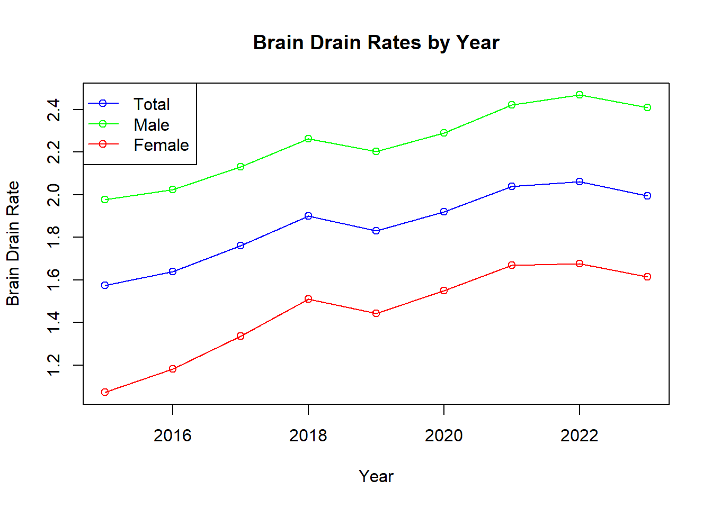
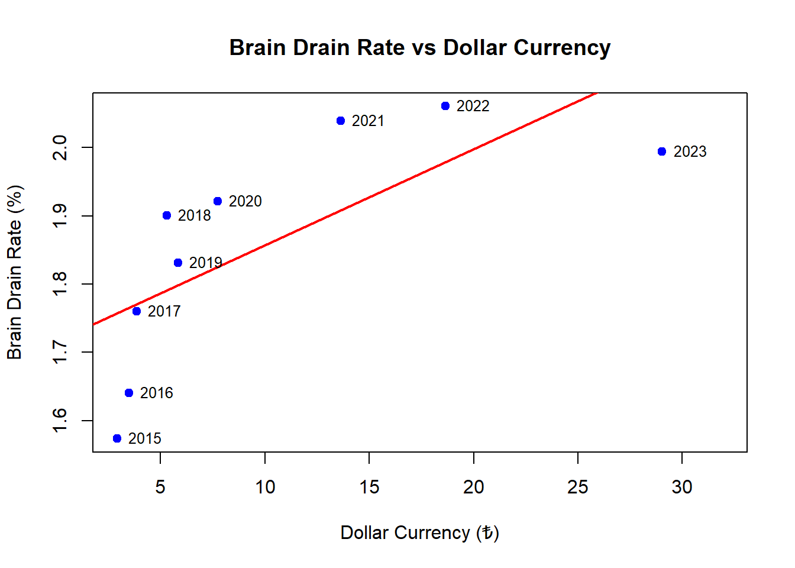
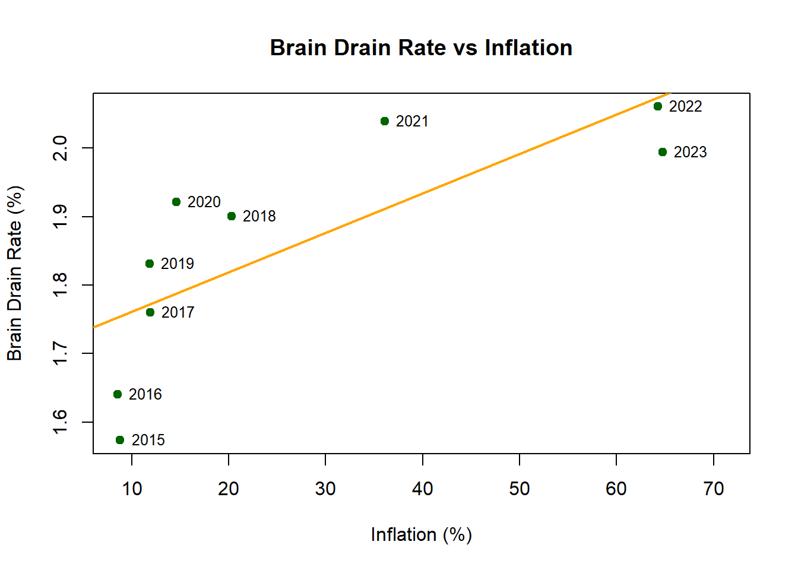
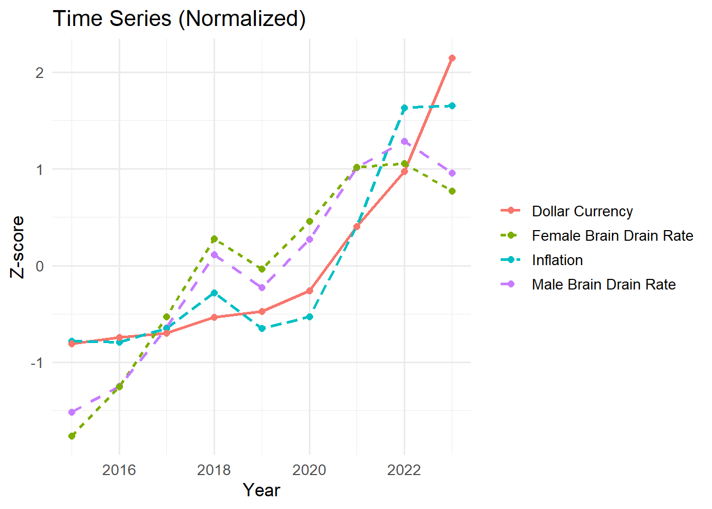
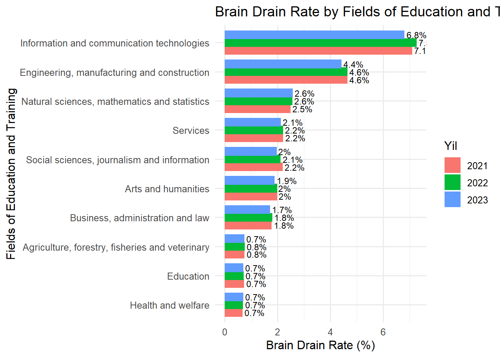
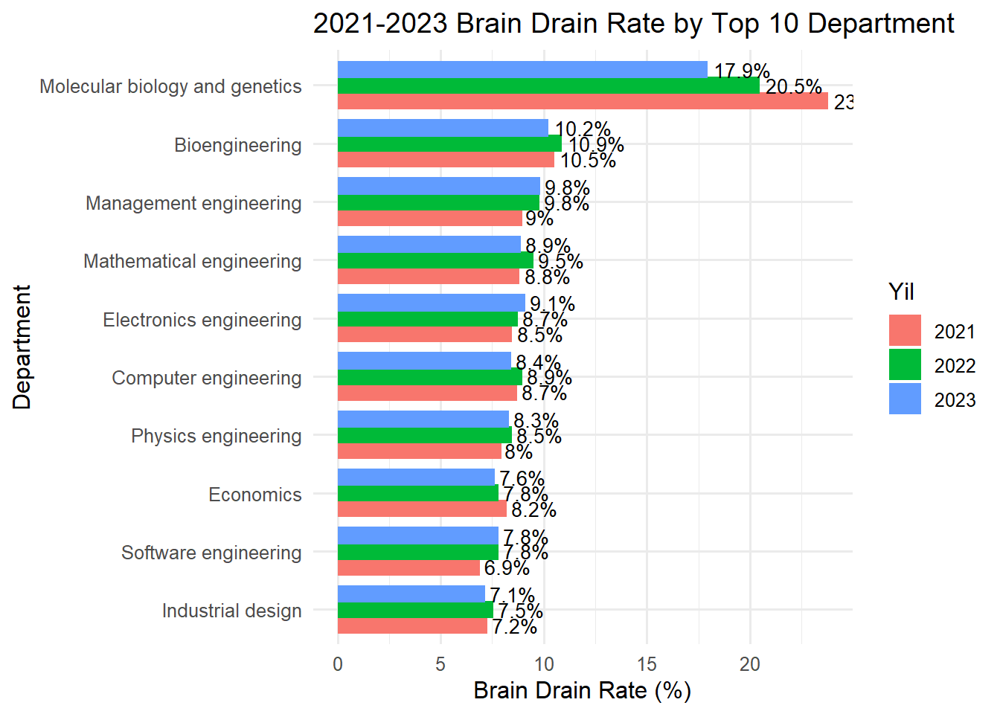
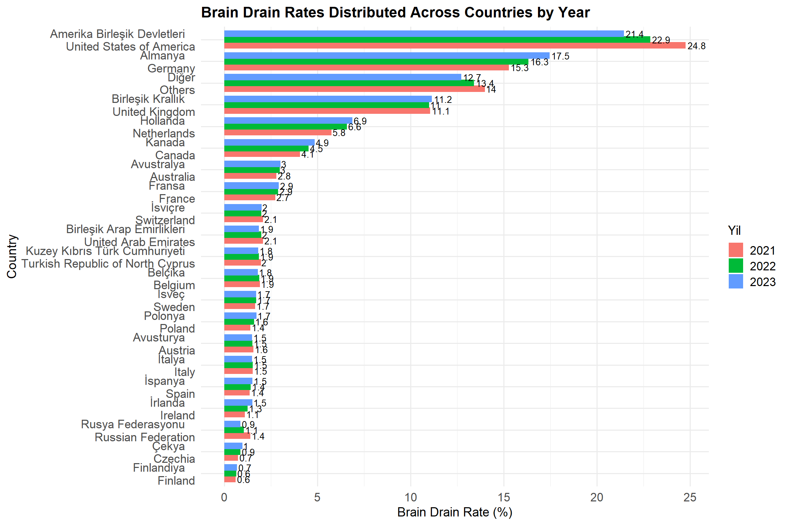
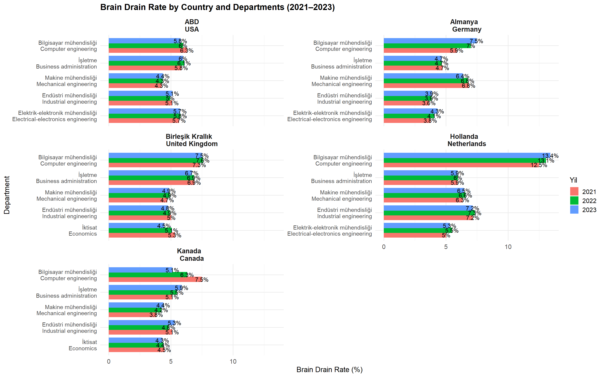

An Empirical Analysis of the Effects of Inflation and Exchange Rate Volatility on Brain Drain in Turkey (2021–2023)
Takım Üyesi / Üyeleri: 1.Batıhan KONUK - [N24141171] 2.Ali Burak AKBULUT - [N24142785]
Welcome to our project page for EMU660 – Decision Making with Analytics.
This project investigates the impact of inflation and exchange rate fluctuations on the brain drain of highly educated individuals from Turkey between 2015 and 2023.
1. Project Overview and Scope
The primary objective of this study is to uncover the impact of high inflation rates and exchange rate fluctuations observed in Turkey between 2021 and 2023 on the emigration tendencies of individuals with higher education qualifications, through the use of statistical and visual analytical techniques. Grounded in indicators that point to a growing trend of emigration among young, highly skilled individuals with career aspirations, this research seeks to examine the economic motivations underlying the migration decisions of this demographic. Within this framework, the study aims to analyze to what extent macroeconomic instability shapes individual migration choices through empirical methods.
Rather than limiting the analysis to simple correlations between economic indicators and migration rates, this research seeks to address the multifaceted nature of the brain drain phenomenon. Accordingly, a wide range of demographic, socio-cultural, and academic variables—such as age groups, gender distributions, academic disciplines, graduation cohorts, and destination countries—are incorporated to provide a comprehensive exploration of brain drain dynamics. In doing so, the project transcends narrowly defined causal relationships based solely on economic variables and aims to offer a broader perspective on the structural dimensions of brain drain and its differential impact across population groups.
Another key objective of this research is to evaluate the potential for translating the findings into actionable public policy recommendations. In particular, the study aims to inform strategies to mitigate the strategic risks associated with brain drain and to design more effective reverse migration policies. In this regard, the project extends beyond theoretical analysis by contributing to Turkey’s efforts to preserve and enhance its human capital through evidence-based insights for both policymakers and the academic community.
In conclusion, this study not only elucidates the influence of economic variables on the migration decisions of highly educated individuals but also offers a comprehensive assessment of the structural drivers underlying brain drain. The findings are integrated into broader social, economic, and political contexts to ensure a holistic understanding of the issue.
2. Data
The datasets utilized in this study are classified into two main categories, in alignment with the primary objectives of the research. The first category comprises economic data reflecting Turkey’s macroeconomic conditions and encompassing structural variables that may influence brain drain decisions. This dataset includes indicators such as annual inflation rates and average dollar currency rates for the period between 2021 and 2023.
The second category consists of brain drain data, capturing the demographic, academic, and geographical characteristics of highly educated individuals who emigrated from Turkey. This comprehensive dataset enables multi-dimensional analysis based on graduation year, gender, field of study, academic major, and destination country.
2.1 Economic Indicators (2021–2023)
The data within this category were obtained from reliable and up-to-date statistics published by the Turkish Statistical Institute (TÜİK) and the Central Bank of the Republic of Turkey (CBRT). The following variables were included in the analysis:
Annual Inflation Rates: Calculated based on the year-on-year percentage change of the Consumer Price Index (CPI) using December as the reference month.
Exchange Rates: Represent the annual average value of the Turkish Lira against the US Dollar.
2.2 Brain Drain Data (2015–2023)
This dataset, covering emigration movements of individuals with higher education degrees from Turkey, was obtained from the “Higher Education Brain Drain Statistics” published by TÜİK as of 2023. The data were structured to enable detailed analyses across the following dimensions:
Brain drain rates by graduation year (for graduates between 2008 and 2017),
Brain drain rates by gender (male/female distribution),
Brain drain rates by field of education (e.g., engineering, information technologies, health sciences, social sciences),
Brain drain rates by academic major (e.g., computer engineering, molecular biology),
Distribution by destination countries (e.g., USA, Germany, Netherlands, Canada),
Distribution of the top five academic majors for the top five destination countries (country-major pairings).
The data were originally obtained in .xlsx format and processed using the R programming language. The preprocessing steps included data cleaning, removal of missing and outlier observations, recoding of categorical variables, and transformation of numerical variables. To ensure consistency, cross-referencing and alignment of variables such as year, academic major, and destination country were performed across datasets. The final, consolidated dataset was saved in .RData format to ensure the accuracy and reproducibility of the subsequent analyses. This preprocessing phase plays a crucial role in guaranteeing the integrity and scientific robustness of the study.
2.3 Reason of Choice
This topic is highly relevant due to increasing concern about qualified youth leaving the country in response to economic uncertainties. The selected data offers both depth and breadth to explore not only economic correlations but also the demographic and academic patterns that characterize this migration.
3. Analysis
The project will combine descriptive and inferential statistical techniques.
3.1 Results
3.1.1. Time Series of Male and Female Brain Drain Rates by Year
The graph illustrates the annual changes in brain drain rates among male and female groups between 2015 and 2023. Both groups exhibit a generally increasing trend, which becomes particularly pronounced starting from 2016. Throughout the period, brain drain rates for males consistently exceed those for females, suggesting a structural difference in migration tendencies between genders. Moreover, this disparity appears to persist over time. In 2022, brain drain rates reach their peak across both groups, followed by a slight decline observed in 2023.
Total Male Female Inflation Exchange_Rate
Total 1.0000000 0.9940012 0.9965359 0.7699341 0.7235411
Male 0.9940012 1.0000000 0.9836616 0.8312430 0.7858132
Female 0.9965359 0.9836616 1.0000000 0.7280651 0.6951686
Inflation 0.7699341 0.8312430 0.7280651 1.0000000 0.9466710
Exchange_Rate 0.7235411 0.7858132 0.6951686 0.9466710 1.00000003.1.2. Effect of Dollar Currency for Brain Drain

The graph reveals a positive correlation between the depreciation of the Turkish lira against the U.S. dollar and the increase in brain drain rates. While the data from 2015 to 2022 align with this linear trend, the year 2023 deviates from this general pattern, exhibiting a lower-than-expected brain drain rate based on the model. This divergence may indicate that the influence of economic indicators on migration decisions has diminished over time, or that other factors—such as legal regulations, migration policies, or employment opportunities—have become more prominent in shaping emigration behavior.
3.1.3. Effect of Inflation for Brain Drain

The graph illustrates a positive linear relationship between inflation rates and brain drain rates in Turkey over the period from 2015 to 2023. From 2015 through 2022, rising inflation appears to correspond with increased emigration, suggesting that inflation may act as an economic push factor influencing individuals’ decisions to migrate. However, the data point for 2023 deviates from this trend: despite historically high inflation levels, the brain drain rate does not increase proportionally and appears to plateau. This deviation may indicate that the effect of inflation on migration decisions reaches a saturation point or is increasingly mediated by other factors, such as social dynamics, policy changes, or individual opportunity structures.
3.1.4. Data normalized Over Z-Scores for Dollar Currency, Inflation, Brain Drain Rate

The normalized time series presented in the graph indicate a strong relationship between the deterioration of economic indicators in Turkey and trends in brain drain. Following 2018, a parallel upward movement is observed between the rising exchange rate and inflation levels and the increasing brain drain rates for both males and females. However, despite economic indicators reaching record-high levels by 2023, the slight decline in brain drain rates suggests that the influence of economic factors on migration decisions may be diminishing, or that other structural determinants have begun to play a more dominant role in shaping emigration behavior.
3.1.5. Brain Drain Rate by Fields of Education and Training

This comparative visualization demonstrates that brain drain patterns vary significantly across educational fields, with technology and engineering disciplines displaying the highest mobility. The persistence of these trends over three years suggests structural drivers behind the migration of skilled professionals, particularly in sectors where global digitalization and industrial modernization demand high-level technical talent. In contrast, fields tied to national systems—such as education, health, and agriculture—exhibit lower migration tendencies. While most sectors show increased mobility from 2021 to 2022, the relative plateauing in 2023 may indicate emerging limitations or saturation effects, warranting further investigation into policy, economic, and social dynamics shaping skilled emigration.
3.1.6. Brain Drain Rate by Top 10 Department

The graph illustrates that brain drain rates among university graduates in Turkey between 2021 and 2023 vary significantly across academic disciplines, with the highest rates observed in molecular biology and genetics, bioengineering, and several branches of engineering. These fields are characterized by strong international demand due to their relevance in high-tech industries and global research agendas, particularly in areas such as biotechnology, software, and data science. While molecular biology and genetics show a gradual decline in migration rates over the three-year period—possibly due to saturation or increasing barriers in destination countries—other fields such as software engineering demonstrate a steady rise, likely driven by digitalization and global labor shortages in IT. Overall, the findings suggest that brain drain is influenced not only by economic conditions but also by the international portability of academic qualifications, sectoral innovation intensity, and the global demand for specialized skills.
3.1.7. Brain Drain Rates Distributed Across Countries by Year

This graph illustrates that brain drain from Turkey has historically been concentrated in traditional destination countries such as the United States and Germany. However, over the past three years, the intensity of migration to these countries has gradually declined. Notably, by 2023, the increasing share of “other” countries indicates a diversification in migration preferences, suggesting that skilled individuals are beginning to consider a broader range of destinations. While European countries maintain a relatively stable level of attractiveness, most do not exhibit significant upward or downward trends. This distribution highlights that emigration dynamics are shaped not only by economic factors but also by structural elements such as political climate, cultural affinity, and visa regimes.
3.1.8. Brain Drain Rate by Country and Departments

The graph reveals that brain drain from Turkey varies significantly across academic disciplines and destination countries. Computer engineering stands out with the highest emigration rates across all countries, which is directly associated with global trends in digitalization, the expanding software industry, and the growing demand for skilled professionals in the technology sector. The Netherlands, in particular, exhibits the highest rate in this field compared to other countries. Germany emerges as a key destination for traditional engineering disciplines such as mechanical and electrical engineering, whereas Canada has shown a notable increase in emigration specifically in computer engineering. Overall, emigration tendencies are more pronounced among engineering disciplines, while fields rooted in the social sciences, such as business administration and economics, display lower and more stable migration rates over time. These differences reflect the demand profiles of host countries for high-skilled labor and the impact of international talent policies.
4. Conclusion
The analysis provides clear evidence that economic instability in Turkey between 2021 and 2023 has had a significant impact on the brain drain of highly educated individuals. Key drivers include inflation, exchange rate volatility, and global demand for STEM graduates. Country-level and department-level breakdowns suggest migration is shaped not only by economic push factors but also by international policy and sectoral talent demand. These insights inform actionable policy directions to retain domestic human capital and design targeted incentive strategies for high-skilled youth.